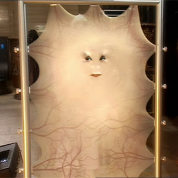

[Primary Navigation]

| Daleks |
| Cyberman |
| The Master |
| Lady Cassandra |
| Davros |
| Weeping Angels |
Lady Cassandra
Portrayed by Zoe Wanamaker
Lady Cassandra O'Brien.Δ17 (pronounced "dot delta seventeen"), or simply Lady Cassandra, was a former human in the far future. Along with other rich and powerful people of the universe, Cassandra was on Platform One, a space station orbiting Earth in the year 5,000,000,000, set to witness the destruction of the planet by the expansion of the Sun.
According to Cassandra, her father, a Texan, and her mother, who came from the Arctic Desert, were the last to be buried in Earth's soil. She was born a male on Earth and lived on the edge of the "Los Angeles Crevasse".
Cassandra, who was probably an aristocrat, was very elitist and "looked down her nose" at the Working-class Rose Tyler, whom she considered "common".